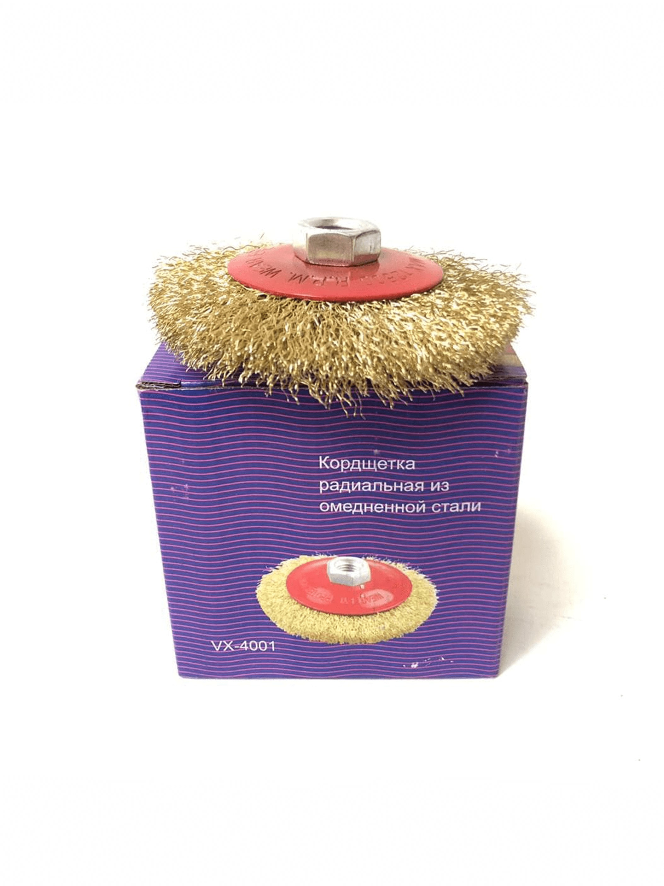
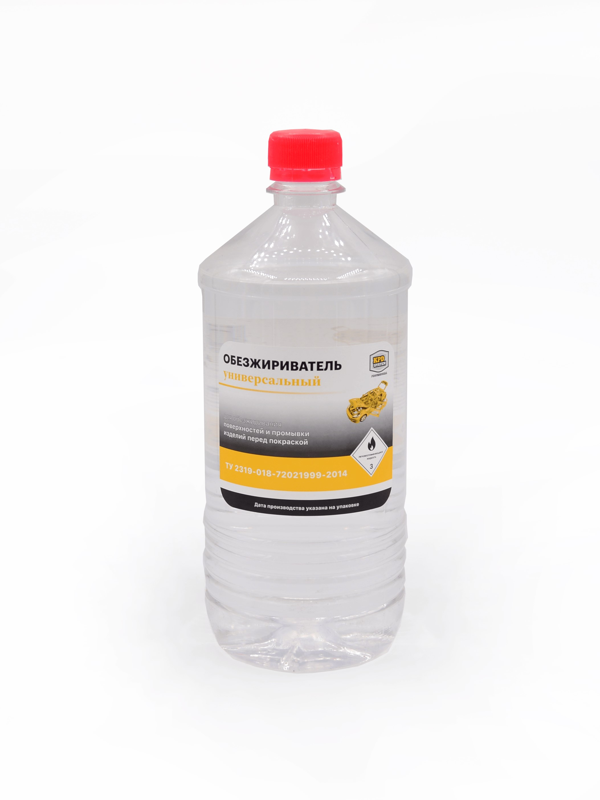
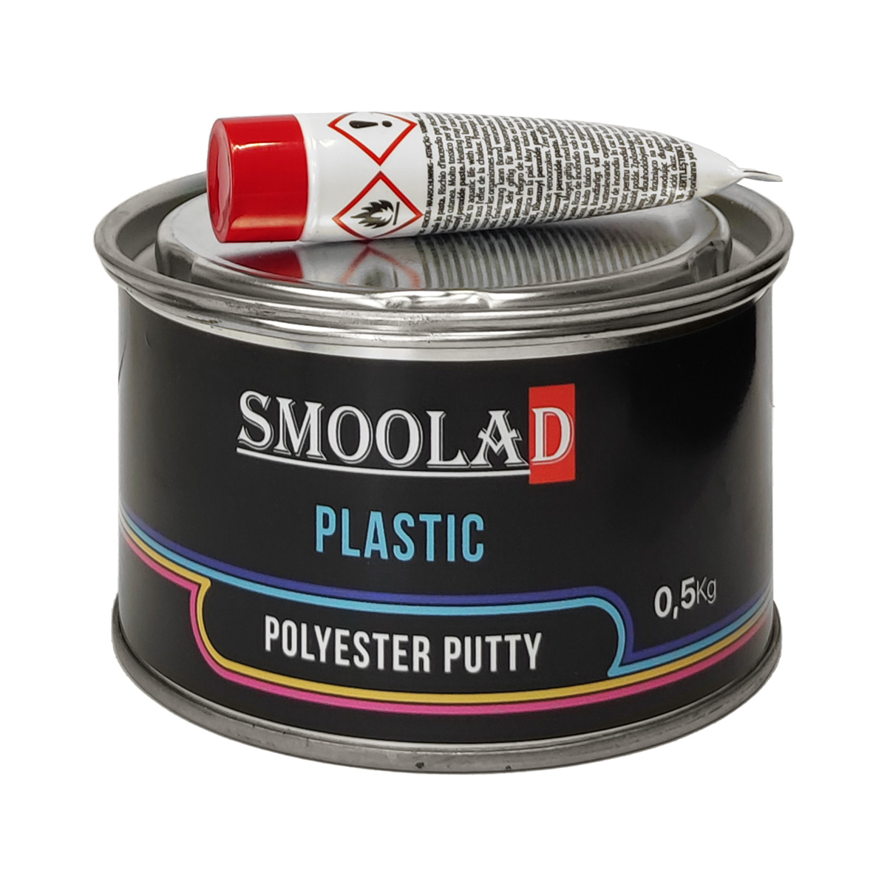
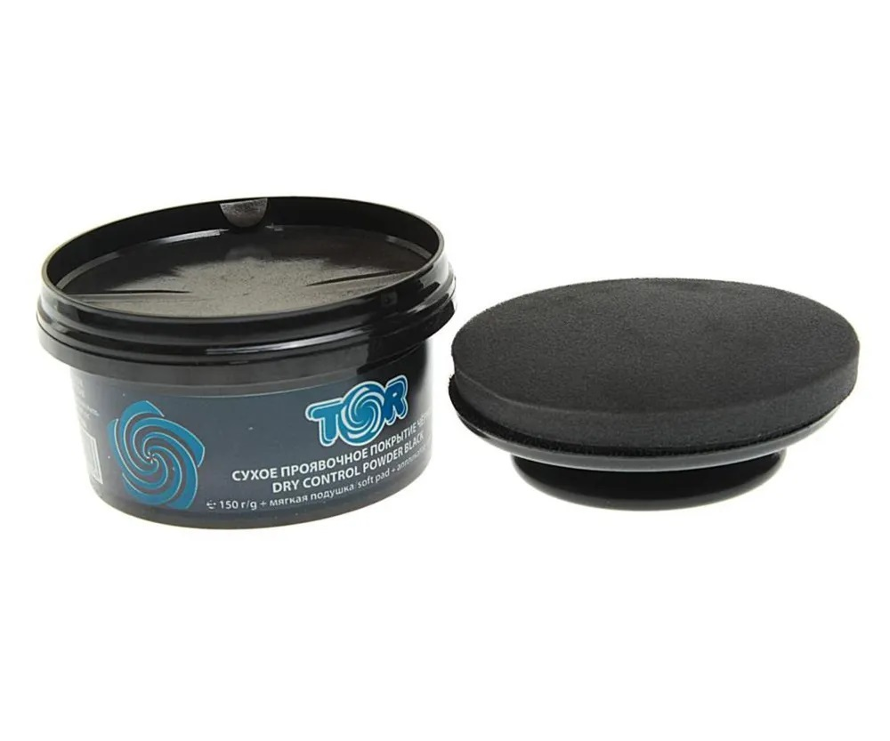

Восстановление пластика
Технология работ по восстановлению пластиковых деталей¶
Подготовительные работы¶
Подготовительные работы состоят из четырёх подэтапов: Демонтаж, Абразивная обработка, Фиксация и сварка элементов и Обезжиривание.
Для ознакомления с каждым подэтапом переходите по специальным закладкам в информационного окне раздела (смотрите ниже). Каждый подэтап обозначен специальным цифровым символом, показывающим последовательность выполнения подэтапов: ...
Подготовительные работы
Подготовка пластиковой детали кузова автомобиля к ремонту включает несколько этапов, каждый из которых важен для достижения качественного результата.
Повреждения пластиковых деталей
У пластиковых деталей могут быть различные повреждения:
- Царапины. Это повреждения поверхности детали, которые возникают при контакте с твёрдыми предметами. Царапины могут быть разной глубины и длины.
- Сколы. Сколы — это повреждения, при которых отламывается кусочек детали. Они могут возникнуть при ударе или падении предмета на деталь.
- Трещины. Трещины — это разрывы в структуре детали. Они могут появиться при сильном ударе или изгибе.
- Потёртости. Потёртости — это участки, на которых поверхность детали становится матовой и теряет блеск. Они могут возникать при трении о другие предметы.
- Деформация. Деформация — это изменение формы детали. Она может произойти при сильном ударе, нагреве или химическом воздействии.
- Разрывы. Разрывы — это сквозные отверстия в детали. Они могут образоваться при столкновении с острым предметом.
-
- Оцените степень повреждения
- Осмотрите поврежденную область. Определите степень разрушения, а также наличие царапин, трещин или других повреждений. Если есть возможность, проверьте состояние лакокрасочного покрытия вокруг вмятины. Иногда под слоем краски могут скрываться сколы или трещины пластика.
-
- Очистка поверхности
- Удалите грязь, пыль и другие загрязнения с помощью моющего средства и воды. Можно использовать мягкую губку или тряпочку. После очистки дайте поверхности высохнуть полностью.
-
- Снятие детали с автомобиля
- Пластиковую деталь, как правило, для ремонта необходимо демонтировать.
- Удалите с детали все мелкие детали (крепеж, вспомогательные элементы и т.д.), наклейки и т.д.
Советы мастера
Важные моменты:
Убедитесь, что у вас есть все необходимые инструменты и материалы для снятия и установки деталей обратно. Некоторые элементы могут требовать специального оборудования или знаний.
Обязательно пометьте снятые детали, чтобы потом было проще собрать автомобиль обратно.
Правильная подготовка и демонтаж нужных деталей значительно улучшат результат покраски и продлят срок службы нового покрытия.
На этом этапе необходимо выполнить следующие работы:
-
- Удалите старое покрытие (при необходимости)
-
- Если на месте вмятины или трещины есть старая краска, лак или грунтовка, их нужно удалить. Для этого используют наждачную бумагу с зернистостью P80-P120 и специальный инструмент:
 Шлифовальные блоки/шлифовальные губки
Шлифовальные блоки/шлифовальные губки- Представляют собой прямоугольные или треугольные бруски с закрепленной на них наждачной бумагой. Удобны для работы с плоскими и угловыми поверхностями.
- Шлифовальные круги
- Используются вместе с дрелью или болгаркой. Позволяют быстро обработать большие площади металла. Существуют различные типы дисков и кругов: с липучками для быстрой замены наждачки, волокнистые диски для агрессивной шлифовки и мягкие диски для деликатной обработки.
-  Металлические щётки
- Применяются для удаления ржавчины и старых покрытий. Щетина может быть различной жесткости и формы, что позволяет выбрать подходящий вариант для конкретной задачи.
Шлифовка должна проводиться аккуратно, чтобы не повредить пластик слишком сильно.
{kind=link}
{kind=link}
Каталог материалов
Для выбора необходимого абразивного материала перейдите в каталог
Советы мастера
 Использование блоков для шлифования пластиковых поверхностей – это удобный способ обработки пластика перед покраской или другими видами отделки. Вот несколько советов, как правильно и эффективно применять эти инструменты:
Использование блоков для шлифования пластиковых поверхностей – это удобный способ обработки пластика перед покраской или другими видами отделки. Вот несколько советов, как правильно и эффективно применять эти инструменты:
-
- Как правильно выбрать блок для шлифования
- Форма: Выберите блок, соответствующий форме обрабатываемой поверхности. Прямоугольные блоки подходят для плоских участков, а треугольные – для углов и сложных форм.
- Материал: Блоки бывают из разных материалов, таких как дерево, пластик или резина. Деревянные блоки прочнее, но могут быстрее изнашиваться, в то время как пластиковые и резиновые более гибкие и долговечные.
- 2. Как закрепляется наждачная бумага на блоке
-
Липучка: Многие современные блоки оснащены липучками для крепления наждачной бумаги. Просто приложите лист наждачки к липучке и слегка прижмите.
Клейкая лента: Если ваш блок не имеет липучек, можно использовать клейкую ленту для фиксации наждачной бумаги. Обмотайте ленту вокруг блока и закрепите края бумаги.
Материалом для изготовления многих пластиковых компонентов автомобиля обычно выступают АБС пластик и ударопрочный термопласт. Не всегда ремонт обходится шлифовкой и покраской царапин и небольших вмятин или просто полировкой. В некоторых случаях пластиковая деталь может быть деформирована, потрескаться и даже разбиться на несколько фрагментов.
В зависимости от типа и степени повреждения, иногда требуется использование сложных методик.
Вмятины
Бывают вмятины от столкновения с тупыми предметами по прямому вектору. От этого краска чаще всего не повреждается, а восстановить геометрию детали можно за счёт использования умеренного нагрева и одновременной правкой поверхности. Пластичный материал может быть легко выправлен без необходимости в последующей обработки поверхности.
Более подробную информацию по коррекции вмятин и подбор необходимого инструмента смотрите в нашей базе знаний в разделе [Ремонт вмятин в пластиковых деталях]
Разрывы
Разрыв, сквозные пробои и расколы конструкции предполагают более серьёзные методы. Ремонт пластиковых частей кузова, изготовленных горячей формовкой лучше осуществлять при помощи сварки, в то время как материалы, не поддающиеся термическому соединению можно только склеить. Для этого используются эпоксидные и полимерные смолы, армирующие элементы и сетки.
Более подробную информацию по коррекции разрывов и подбор необходимого инструмента смотрите в нашей базе знаний в разделе [Ремонт разрывов в пластиковых деталях]
Для восстановительных работ с пластиком вам могут понадобиться следующие инструменты:
-
Электропаяльник для соединения трещин и разломов с помощью металлических скобок. Быстро и надежно зафиксирует все трещины, а за счет нагретой скобы, металл не будет выступать на поверхности и останется внутри пластика.
-
Электрофен незаменимый инструмент при ремонте пластиковых деталей. Бережный и равномерный нагрев до нужной температуры (до 470 градусов), различные насадки для коррекции деталей различных форм и размеров.
-
Паяльная лампа – это единственная стационарная паяльная лампа, которая предоставляет возможность безопасного использования открытого пламени и идет с катализатором и паяльной насадкой, превращая этот инструмент в самую многофункциональную стационарную паяльную лампу.
-
Специальные скобы для паяльника, быстро и удобно скрепят любую трещину в пластиковой детали, соединят различные части разбитой пластиковой детали.
-
Полиэфирная смола. Набор состоит из смолы, отвердителя и стекломата. Образованный из него пластик обладает очень высокой механической прочностью и предназначен для заполнения значительных убытков материала (вызванных например коррозией), для укрепления и фиксации металлических, а также пластмассовых поверхностей.
{kind=link}
{kind=link}
{kind=link}
{kind=link}
{kind=link}
Каталог материалов
Для выбора необходимого оборудования для ремонта пластиковых деталей перейдите в каталог
{kind=link}
- С помощью фена выполните нагрев детали и постарайтесь максимально приблизить форму поверхности к исходной.
- В случае наличия трещин и сколов, с помощью электропаяльника, специальных скоб и клеев соедините все части детали и постарайтесь придать первоначальную форму.
- Для укрепления мест соединений используйте специальные армирующие сетки.
- После завершения фиксации частей пластиковой детали выполните абразивную обработку с помощью наждачной бумаги и специальных брусков. Добейтесь внешнего вида детали максимально приближенного к первоначальному.
Советы мастера
- Используйте качественные материалы и профессиональные инструменты. Это поможет вам гарантировать долговечность отремонтированной детали.
- Применяйте формы и направляющие для восстановления геометрии пластиковых деталей.
Обезжиривание пластиковой поверхности перед покраской является важным этапом подготовки, который обеспечивает качественную адгезию краски и долговечность покрытия.
Для работы нам понадобится:
-
 Обезжиривающий раствор (выберите из каталога наиболее подходящий для ваших работ)
-
 Чистые тряпочки или салфетки
Чистые тряпочки или салфетки -
Защитные перчатки
-
 Защитные очки
Защитные очки -
 Маска для защиты дыхания
Маска для защиты дыхания
{kind=link}
{kind=link}
С полным списком обезжиривающих составов, средств защиты и салфеток вы сможете ознакомиться в нашем каталоге наиболее подходящий для ваших работ)
- 1. Нанесите обезжиривающее средство
- Смочите чистую тряпочку или салфетку в обезжиривающем растворе. Начните обрабатывать поверхность, двигаясь разнонаправленно или по кругу. Особое внимание уделите углам, краям и другим сложным местам.
- 2. Протрите поверхность второй раз:
-
Возьмите новую чистую тряпочку и снова смочите её в обезжиривателе.
Повторите процедуру, чтобы убедиться, что вся поверхность тщательно очищена.
- 3. Проверьте чистоту поверхности:
- После высыхания убедитесь, что на пластике нет следов жира, масла или других загрязнений. Поверхность должна выглядеть сухой и чистой.
- 4. Дайте поверхности высохнуть:
- Оставьте деталь на некоторое время, чтобы она полностью высохла. Время сушки зависит от используемого обезжиривающего раствора и условий окружающей среды.
5. Переходите к следующему этапу:
Советы мастера
- Используйте качественные обезжиривающие средства. Специализированные составы обеспечат наилучший результат.
- Работайте в хорошо проветриваемом помещении. Обезжиривающие растворы могут выделять вредные пары.
- Не прикасайтесь к обезжиренной поверхности руками. Жир с кожи может снова загрязнить деталь.
- Если используете воду для промывки, убедитесь, что поверхность полностью сухая перед дальнейшими работами.
Соблюдение этих рекомендаций поможет вам получить идеальную поверхность для покраски, что обеспечит долгий срок службы покрытия и его эстетичный вид.
Шпатлевка¶
Шпатлевка
Технология использования мягкой шпатлёвки для ремонта пластиковых деталей автомобиля предполагает поэтапное выполнение определённых операций. Применяется для финишной обработки поверхности, устранения мелких дефектов, таких как царапины, небольшие вмятины и неровности.
Что такое мягкая шпатлевка по пластику
Мягкая шпатлёвка по пластику: Применяется для первичной и финишной обработки поверхности, устранения дефектов, таких как царапины, вмятины и неровности. Она наносится в несколько слоев и шлифуется. При проведении шпатлевочных работ по пластику конструкционную шпатлевку использовать не нужно и вся работа по выравниванию поверхности выполняется одним типом шпатлевки.
- Мягкая шпатлёвка: Основой служит полиэфирная смола, которая обеспечивает эластичность и лёгкость обработки. В состав могут входить пластификаторы и наполнители, улучшающие адгезию и удобство применения.
- Мягкая шпатлёвка: Менее прочная, чем конструкционная, но достаточно эластична, чтобы компенсировать небольшие деформации и вибрации. Её основное назначение — создание гладкой и ровной поверхности перед покраской.
- Обеспечивает хорошую адгезию к различным материалам, включая металл, пластик и старую краску. Она легко наносится и распределяется по поверхности, создавая ровный слой.
- Легко шлифуется, позволяя быстро и точно выровнять поверхность. Это делает её удобной для финишной обработки перед покраской.
- Применяется на завершающих стадиях ремонта для устранения мелких дефектов и создания гладкой поверхности перед покраской. Она идеально подходит для финишной доводки и подготовки к нанесению краски.
 SMOOLAD Шпатлевка по пластику PLASTIC - Шпатлёвка SMOOLAD BLACK PLASTIC для пластмасс. Обладает высокой эластичностью и отличной адгезией к большин-ству пластмасс (за исключением полиэтилена и тефлона). Обладает также удовлетворительной адгезией к полипропиленам, что позволяет шпатлевать не загрунтованные поверхности.
{kind=link}
Она оставляет нелипкую поверхность, не вызывая усадки во время отверждения.
Выбрать шпатлевку
Для различных задач подбирайте соответствующие шпатлевки. С полным спектром шпатлевок вы можете ознакомиться в нашем каталоге
- Подготовьте шпатлёвочную смесь согласно инструкции производителя. Обычно она состоит из двух компонентов: самой шпатлёвки и отвердителя.
- Тщательно перемещайте компоненты шпатлевки с помощью шпателя или механического миксера. Добейтесь однородной консистенции.
Внимание
Время рабочего состояния шпатлевок ограничено, старайтесь использовать сразу весь раствор.

3. Нанесите шпатлевку с помощью специальных шпателей или ракелей. С полным спектром шпателей вы можете ознакомиться в нашем каталоге
- Дайте шпатлёвке полностью высохнуть. Время высыхания зависит от типа шпатлёвки и условий окружающей среды (обычно около 20–30 минут).
Советы мастера
Особенности и рекомендации:
- Работайте в чистом помещении: Чтобы избежать попадания пыли и мусора в свеженанесённую шпатлёвку, проводите ремонтные работы в чистом, хорошо проветриваемом помещении.
- Защищайте окружающие поверхности: Закройте прилегающие участки автомобиля малярным скотчем и плёнкой, чтобы избежать случайного попадания шпатлёвки на неповрежденные зоны.
- Соблюдайте технику безопасности: Надевайте защитные очки, перчатки и респиратор, особенно при работе с химическими веществами и шлифованием.
Следуя этим рекомендациям, вы сможете успешно применить лёгкую шпатлёвку для ремонта пластиковых деталей автомобиля, обеспечив качественный и долговечный результат.
Абразивная обработка 1¶
Этап Абразивная обработка 1 состоят из трёх подэтапов: Сухая проявка, Обезжиривание и Механическая абразивная обработка.
Для ознакомления с каждым подэтапом переходите по специальным закладкам в информационного окне раздела (смотрите ниже). Каждый подэтап обозначен специальным цифровым символом, показывающим последовательность выполнения подэтапов: ...
Абразивная обработка 1
Сухая проявка — это метод контроля качества шпатлеванных поверхностей перед последующей покраской. Он позволяет выявить недостатки и неровности, которые могут быть незаметны визуально. Основная идея заключается в использовании специального порошка или аэрозоля, который контрастирует с поверхностью и помогает обнаружить дефекты.
Для выполнения работ нам понадобится:
 TOR Сухое проявочное покрытие с подушкой-аппликатором и держателем подушки-аппликатора черное 150гр
{kind=link}
Предназначено для выявления дефектов на поверхности грунтов или шпатлевок светлых цветов.
Не содержит растворителей, легко наносится на поверхность, не забивает абразив. Совместимо со средствами для сухой и влажной шлифовки.
 Наждачная бумага (P180–P320) и бруски для крепления наждачной бумаги. Перед каждым тестом сухой проявки необходимо выполнять выравнивание шпатлевки на ремонтируемой детали.
Наждачная бумага (P180–P320) и бруски для крепления наждачной бумаги. Перед каждым тестом сухой проявки необходимо выполнять выравнивание шпатлевки на ремонтируемой детали.
Дождитесь высыхания шпатлевки
Перед началом работы по шлифованию и проявкой, дождитесь полного высыхания шпатлевки. Обычно это 20-30 минут после нанесения.
1. Нанесите проявляющий порошок
Выберите из каталога
Для удобства работы у нас в наличии всегда есть сухие проявочные покрытия разных цветов, с полным перечнем вы можете ознакомиться в нашем каталоге
Используйте специальный проявляющий порошок или аэрозоль, предназначенный для этих целей. Порошок может быть чёрного, белого или флуоресцентного цвета, в зависимости от цвета подложки.
2. Равномерно распылите порошок на поверхность, покрывая весь участок. Важно, чтобы слой был тонким и равномерным.
- 3. Выполните предварительную шлифовку шпатлевки:
- Проведите предварительную шлифовку шпатлёванной поверхности наждачной бумагой средней зернистости (P180–P320), чтобы удалить излишки шпатлёвки и выровнять поверхность.
- 4. Осмотрите поверхность под различными углами освещения.
- Порошок выявит все неровности и дефекты, которые будут видны как тени или светлые пятна.
- 5. Пометьте места коррекции
- Если обнаруживаются дефекты, такие как впадины, бугры или царапины, отметьте их маркером для последующего исправления.
- 6. Удалите оставшийся порошок с поверхности
- С помощью сжатого воздуха или мягкой ткани удалите порошок проявки. Убедитесь, что поверхность полностью очищена.
- 7. Выполните обезжиривание поверхности (см. шаг обезжиривание)
- Выполните обезжиривание и дождитесь высыхания поверхности.
- 8. Исправление дефектов
- Выполните дополнительную шпатлёвку: Заполните отмеченные впадины дополнительной шпатлёвкой, следя за тем, чтобы слой был минимальным. Коррекцию выполняйте мягкой шпатлевкой.
9. Выполните повторную проверку Повторное нанесение порошка: (как в пункте 2). Нанесите проявляющий порошок снова и проверьте поверхность на наличие оставшихся дефектов.
10. Выполните ручную шлифовку: После высыхания шпатлёвки повторно отшлифуйте поверхность, используя наждачную бумагу средней зернистости (P180–P320).
- 11. Удалите остатки проявочного порошка
- Удалите оставшийся порошок с поверхности с помощью сжатого воздуха или мягкой ткани. Убедитесь, что поверхность полностью очищена перед следующими этапами.
Советы мастера
- Используйте малярный скотч: Закрывайте прилегающие участки автомобиля малярным скотчем и плёнкой, чтобы избежать попадания порошка на неповрежденные зоны.
- Работайте в чистом помещении: Проводите ремонтные работы в чистом, хорошо проветриваемом помещении, чтобы избежать попадания пыли и мусора в свеженанесённый порошок.
- Соблюдайте технику безопасности: Надевайте защитные очки, перчатки и респиратор, особенно при работе с химическими веществами и шлифованием.
Обезжиривание пластиковой поверхности перед покраской является важным этапом подготовки, который обеспечивает качественную адгезию краски и долговечность покрытия.
Для работы нам понадобится:
-
Обезжиривающий раствор (выберите из каталога наиболее подходящий для ваших работ)
-
Чистые тряпочки или салфетки
-
Защитные перчатки
-
Защитные очки
-
Маска для защиты дыхания
С полным списком обезжиривающих составов, средств защиты и салфеток вы сможете ознакомиться в нашем каталоге наиболее подходящий для ваших работ)
- 1. Нанесите обезжиривающее средство
- Смочите чистую тряпочку или салфетку в обезжиривающем растворе. Начните обрабатывать поверхность, двигаясь разнонаправленно или по кругу. Особое внимание уделите углам, краям и другим сложным местам.
- 2. Протрите поверхность второй раз:
-
Возьмите новую чистую тряпочку и снова смочите её в обезжиривателе.
Повторите процедуру, чтобы убедиться, что вся поверхность тщательно очищена.
- 3. Проверьте чистоту поверхности:
- После высыхания убедитесь, что на пластике нет следов жира, масла или других загрязнений. Поверхность должна выглядеть сухой и чистой.
- 4. Дайте поверхности высохнуть:
- Оставьте деталь на некоторое время, чтобы она полностью высохла. Время сушки зависит от используемого обезжиривающего раствора и условий окружающей среды.
5. Переходите к следующему этапу:
Советы мастера
- Используйте качественные обезжиривающие средства. Специализированные составы обеспечат наилучший результат.
- Работайте в хорошо проветриваемом помещении. Обезжиривающие растворы могут выделять вредные пары.
- Не прикасайтесь к обезжиренной поверхности руками. Жир с кожи может снова загрязнить деталь.
- Если используете воду для промывки, убедитесь, что поверхность полностью сухая перед дальнейшими работами.
Соблюдение этих рекомендаций поможет вам получить идеальную поверхность для покраски, что обеспечит долгий срок службы покрытия и его эстетичный вид.
Шлифовка шпатлёвки с помощью шлифовальной машины требует внимания к деталям исполнения и соблюдения технологии. Правильно выполненная шлифовка гарантирует ровную и гладкую поверхность, готовую к последующему нанесению грунтовки и краски.
Если, после выполненных тестов сухой проявки дефекты отсутствуют, выполните окончательную шлифовку поверхности, используя наждачную бумагу (P80–P320), чтобы добиться идеальной гладкости.
Для данного этапа нам понадобится:
- Механическая шлифовальная машина (электро или пневмо)
- Наждачная бумага (P80–P320)
- Средства индивидуальной защиты: очки, перчатки, защитный костюм
Выберите из каталога
Средства индивидуальной защиты и наждачную бумагу вы можете выбрать у нас. С полным перечнем вы можете ознакомиться в нашем каталоге
1. Подготовьте шлифовальную машину с соответствующими насадками и абразивными кругами. Выбирайте круги с зернистостью, соответствующей типу шпатлёвки и стадии шлифовки.
2. Используйте редства защиты: Наденьте защитные очки, маску и перчатки, чтобы защитить себя от пыли и мелких частиц. Убедитесь, что рабочее место хорошо освещено и оборудовано системой пылеудаления, если это возможно.
3. Выполните шлифовку Держите машину двумя руками и медленно перемещайте её по поверхности, делая плавные движения вперёд-назад или по кругу. Следите за тем, чтобы давление было равномерным, чтобы избежать перегрева поверхности и появления углублений.
4. Выполните регулярно контроль Регулярно останавливайтесь и проверяйте поверхность на наличие дефектов. Если появляются глубокие царапины или борозды, уменьшите давление и переключитесь на менее агрессивный абразив.
5. Удалите пыль и остатки шпатлёвки с поверхности с помощью сжатого воздуха или мягкой ткани.
Советы мастера
- Не торопитесь: Шлифовка — это медленный и кропотливый процесс. Не спешите, чтобы избежать ошибок и необходимости переделывать работу.
- Регулярная смена абразивных кругов: Меняйте круги по мере износа, чтобы обеспечить эффективное удаление материала и избежать царапин.
- Контролируйте температуру: Избегайте длительного шлифования одного участка, чтобы не перегревать поверхность и не вызывать деформации металла.
- Используйте направляющие: При необходимости используйте специальные направляющие или шаблоны, чтобы контролировать толщину снимаемого слоя.
Выполнение этих шагов поможет вам качественно отшлифовать шпатлёванные поверхности при ремонте автомобиля, обеспечивая идеальное основание для дальнейших работ.
Подготовка грунта¶
Этап Подготовка грунта состоят из трёх подэтапов: Обклейка детали, Обезжиривание и Подготовка грунта.
Для ознакомления с каждым подэтапом переходите по специальным закладкам в информационного окне раздела (смотрите ниже). Каждый подэтап обозначен специальным цифровым символом, показывающим последовательность выполнения подэтапов: ...
Типы лакокрасочных покрытий
При работе с различными деталями и повреждениями могут использоваться различные типы красок. Для описания технологии в данном руководстве описываются действия на примере акриловых грунтов и красок. Если вы используете краски на другой основе, внимательно прочитайте правила подготовки красок на упаковке и следуйте указаниям производителя краски.
Типы лакокрасочных покрытий
Лакокрасочные покрытия при ремонте деталей автомобиля используются на основе различных технологий и материалов, которые обеспечивают защиту, восстановление внешнего вида и долговечность. Старайте выбирать ЛКП максимально удовлетворяющие по условиям применения для вашей детали:
- Акриловые эмали
- Описание: Акриловые эмали — это одно- или двухкомпонентные покрытия, которые состоят из акриловых смол, растворителей и пигментов. Они быстро сохнут и обладают хорошей адгезией к поверхности.
- Применение: Используются для финишного покрытия кузова автомобиля. Обеспечивают яркий цвет и устойчивость к механическим повреждениям.
- Алкидные эмали
- Описание: Алкидные эмали содержат алкидные смолы, которые обеспечивают высокую прочность и устойчивость к воздействию окружающей среды.
- Применение: Применяются для базового покрытия и грунтовки. Обеспечивают хорошую защиту от коррозии и устойчивость к химическим воздействиям.
- Полиуретановые покрытия
- Описание: Полиуретановые покрытия состоят из полиуретановых смол и отвердителей. Они обладают высокой прочностью, устойчивостью к царапинам и воздействию ультрафиолета.
- Применение: Используются для финишного покрытия и защиты от механических повреждений. Особенно популярны в автомобильной аэрографии и тюнинге.
- Водорастворимые краски
- Описание: Водорастворимые краски содержат акриловые смолы, растворенные в воде. Они экологически безопасны и быстро сохнут.
- Применение: Используются для финишного покрытия и окраски деталей. Обеспечивают равномерное нанесение и устойчивость к выцветанию.
- Грунтовки
- Описание: Грунтовки применяются для подготовки поверхности перед нанесением основного покрытия. Они обеспечивают хорошую адгезию и защиту от коррозии.
- Применение: Используются для выравнивания поверхности и улучшения сцепления лакокрасочного покрытия с металлом.
- Шпатлевки
- Описание: Шпатлевки используются для выравнивания поверхности и устранения дефектов перед покраской. Они содержат наполнители и связующие вещества.
- Применение: Применяются для ремонта небольших повреждений и выравнивания поверхности перед нанесением грунтовки и краски.
- Антикоррозийные покрытия
- Описание: Антикоррозийные покрытия содержат ингибиторы коррозии и защитные добавки. Они предотвращают образование ржавчины и защищают металл от воздействия влаги и химических веществ.
- Применение: Используются для защиты скрытых полостей и труднодоступных мест автомобиля.
- Защитные покрытия (воски, полимеры)
- Описание: Защитные покрытия, такие как воски и полимеры, наносятся на финишное лакокрасочное покрытие для дополнительной защиты от внешних воздействий.
- Применение: Используются для защиты от ультрафиолета, грязи и химических веществ, а также для придания блеска и гидрофобных свойств.
- Металлизированные покрытия
- Описание: Металлизированные покрытия содержат металлические пигменты, которые придают поверхности металлический блеск.
- Применение: Используются для создания эффектных визуальных решений и защиты от ультрафиолетового излучения.
- Матовые покрытия
- Описание: Матовые покрытия содержат специальные добавки, которые придают поверхности матовый эффект.
- Применение: Используются для создания уникального внешнего вида и защиты от бликов.
Подготовка грунта
Обклейка детали автомобиля перед нанесением грунта помогает защитить неповрежденные участки от попадания грунта и других химических веществ. Правильно выполненная обклейка минимизирует риск возникновения дефектов и упрощает процесс нанесения грунта.
Обклейка применяется при покраске несъемных деталей или в случае, когда на окрашиваемой детали имеются участки на которые не должны попасть грунт или краска. Это может быть внутренняя поверхность детали или обратная сторона.
Для выполнения работы нам понадобятся:
Малярный скотч: Широкий и узкий скотч для различных участков. Высококачественный малярный скотч, применяется при ремонте кузова автомобиля. Обладает надежной адгезией, высокой стойкостью на разрыв.
{kind=link}
Маскирующая бумага: Прочная, эластичная бумага, без пор предназначена для укрывания не подлежащих окраске участков кузова автомобиля. Позволяет легко и надёжно маскировать сложные по форме поверхности. Не ворсится. Надёжно защищает поверхность от проникновения лакокрасочных материалов.
{kind=link}
Укрывная пленка Статичная пленка HDPE, надежно защищает рабочую поверхность от попадания различной лакокрасочной продукции, грязи и пыли. Не поглощает краску. Толщина:7 мкм. Пленка оборудована клеющим скотчем и крепится к детали надежно и точно.
{kind=link}
Уплотнители для проемов Предназначены для маскирования проемов автомобилей перед окраской. Валики позволяют скрыть следы ремонта, так как не оставляют четких границ окраски после удаления с поверхности.
{kind=link}
Высококачественная маскировочная лента изготовлена из пропитанной латексом креповой бумаги и покрыта клеевым составом на основе каучука. Термостойкость 90°C Подходит для маскировки металлических и пластиковых деталей. Прекрасная адгезия ленты к ленте. Устойчива к растворителям. Не оставляет следов после удаления.
{kind=link}
- Дополнительные инструменты и специальная защитная одежда
- Ножницы: Для разрезания плёнки и скотча.
- Перчатки: Для защиты рук и предотвращения попадания жира на материалы.
Каталог
с полным перечнем маскировочного материала вы можете ознакомиться в нашем каталоге
- Начните с оклейки всех прилегающих к окрашиваемым областям участков. Используйте широкий скотч для больших поверхностей и узкий — для мелких деталей.
- Накройте оставшиеся открытые участки плёнкой или маскировочной бумагой, закрепив её малярным скотчем. Убедитесь, что плёнка плотно прилегает к поверхности и не образует складок.
- Создайте защитные барьеры
- Края и стыки: Особенно тщательно проклейте края и стыки, чтобы предотвратить проникновение краски под плёнку.
- Детали: Если на детали есть сложные элементы, такие как решётки, молдинги или зеркала, используйте узкий скотч для точного обклеивания.
- Соединение деталей: с помощью маскировочных валиков установите защиту от затекания в пространство между деталями (дверные проемы, внутренние полости)
- Внимательно осмотрите всю обклеенную поверхность, чтобы убедиться, что все участки защищены должным образом. При необходимости внесите изменения, добавив дополнительные полосы скотча или плёнки.
Советы мастера
- Используйте качественные материалы: Хороший малярный скотч и плёнка помогут избежать проблем с отслаиванием и протеканием краски.
- Планируйте заранее: Заранее продумайте, какие участки нужно закрыть, чтобы минимизировать количество отходов и сэкономить время.
- Работайте аккуратно: Не торопитесь, чтобы избежать ошибок и необходимости переделывать работу.
- Берегите руки: Использование перчаток поможет сохранить кожу рук и избежать попадания жира на обклеиваемые поверхности.
Обезжиривание пластиковой поверхности перед покраской является важным этапом подготовки, который обеспечивает качественную адгезию краски и долговечность покрытия.
Для работы нам понадобится:
-
Обезжиривающий раствор (выберите из каталога наиболее подходящий для ваших работ)
-
Чистые тряпочки или салфетки
-
Защитные перчатки
-
Защитные очки
-
Маска для защиты дыхания
С полным списком обезжиривающих составов, средств защиты и салфеток вы сможете ознакомиться в нашем каталоге наиболее подходящий для ваших работ)
- 1. Нанесите обезжиривающее средство
- Смочите чистую тряпочку или салфетку в обезжиривающем растворе. Начните обрабатывать поверхность, двигаясь разнонаправленно или по кругу. Особое внимание уделите углам, краям и другим сложным местам.
- 2. Протрите поверхность второй раз:
-
Возьмите новую чистую тряпочку и снова смочите её в обезжиривателе.
Повторите процедуру, чтобы убедиться, что вся поверхность тщательно очищена.
- 3. Проверьте чистоту поверхности:
- После высыхания убедитесь, что на пластике нет следов жира, масла или других загрязнений. Поверхность должна выглядеть сухой и чистой.
- 4. Дайте поверхности высохнуть:
- Оставьте деталь на некоторое время, чтобы она полностью высохла. Время сушки зависит от используемого обезжиривающего раствора и условий окружающей среды.
5. Переходите к следующему этапу:
Советы мастера
- Используйте качественные обезжиривающие средства. Специализированные составы обеспечат наилучший результат.
- Работайте в хорошо проветриваемом помещении. Обезжиривающие растворы могут выделять вредные пары.
- Не прикасайтесь к обезжиренной поверхности руками. Жир с кожи может снова загрязнить деталь.
- Если используете воду для промывки, убедитесь, что поверхность полностью сухая перед дальнейшими работами.
Соблюдение этих рекомендаций поможет вам получить идеальную поверхность для покраски, что обеспечит долгий срок службы покрытия и его эстетичный вид.
Качество подготовки грунтовки перед покраской автомобильной детали влияет на качество и долговечность покрытия. Правильно подобранная и нанесённая грунтовка обеспечивает хорошую адгезию краски, защищает металл от коррозии и создаёт ровную основу для финишного слоя.
Грунт акриловый 2К 4+1. Обладает отличными заполняющими свойствами. Дает хорошую адгезию к зашпатлеванным кузовным поверхностям и старым лакокрасочным покрытиям. Обеспечивает ровное и качественное покрытие. Легко поддается ручной/механической обработке сухими и влажными шлифовальными материалами. Сокращает время шлифовки, что позволяет экономить абразивные материалы.
{kind=link}
Это идеальный продукт для нанесения изолирующего слоя перед окрашиванием базовым покрытием.
Грунт обычно представлен в двух компонентах: сам грунт и отвердитель.
{kind=link}
Для получения необходимой консистенции необходимо смешать в указанных пропорциях грунт с отвердителем и довести полученную смесь до нужной вязкости с помощью растворителя или специального разбавителя.
На упаковке грунта указаны типы растворителей и разбавителей, которые можно с ним использовать.
Каталог
с полным перечнем грунтов вы можете ознакомиться в нашем каталоге
{kind=link}
- Смешайте компоненты в правильной пропорции, указанной на упаковке (для каждого типа грунта указана пропорция для смешивания компонентов). Для соблюдения пропорций грунта и отвердителя используйте специальный мерный стакан.
- Перемешивайте до однородной массы с помощью шпателя или электрического миксера.

- Проверьте вязкость грунтовой смеси в соответствии с требованиями указанными в способе применения грунта. Для проверки вязкости используется специальный инструмент Вискозиметр. Для определения вязкости грунта или лакокрасочных изделий в секундах по времени истечения 100 мл краски через отверстие диаметром 4 мм. Для акриловых грунтов средняя вязкость должна составлять 20-23 секунды.
- Добавляйте в полученную смесь растворитель до получения смеси требуемой вязкости.
- Грунт наносится на поверхность с помощью краскопульта, в труднодоступных местах можно использовать специальные аппликаторы или микрокисточки
{kind=link}
Микрокисточки выгодно отличаются конусообразной формой рабочей поверхности, что позволяет точнее наносить ЛКМ.
Используются для:
- Подкраски сколов и царапин
- Микроремонта
- Для покраски труднодоступных мест
Советы мастера
- Используйте допустимые растворители: Внимательно прочитайте на упаковке грунта, какие растворители допускаются для работы с данным грунтом.
- Температурные условия: Работайте в условиях комнатной температуры (18–25°C) и низкой влажности, чтобы обеспечить оптимальное высыхание и полимеризацию грунта.
- Защитное оборудование: Надевайте защитные очки, маску и перчатки, чтобы защитить себя от паров и пыли.
Нанесение грунта¶
Этап Нанесение грунта состоят из двух подэтапов: Загрузка краскопульта грунтом, Нанесение грунта.
Для ознакомления с каждым подэтапом переходите по специальным закладкам в информационного окне раздела (смотрите ниже). Каждый подэтап обозначен специальным цифровым символом, показывающим последовательность выполнения подэтапов: ...
Грунтование
При загрузке грунта в краскопульт необходимо строго соблюдать определенную технологию, поскольку неправильная техника загрузки может привести к неравномерному нанесению грунта и проблемам с качеством покрытия.
Для загрузки грунта нам понадобится:
Фильт воронка необходимое средство, которое поможет вам загрузить грунт в бачок краскопульта и отсеять все посторонние пылинки и комки грунта.
{kind=link}
Мини фильтр, устанавливающийся на входе в пистолет для устранения конденсата. Снабжен клапаном ручного слива конденсата
{kind=link}
Фильтр (ситечко) Если вы используете краскопульт с верхним бачком, фильтр ситечко будет вам незаменимым помощников, чтобы избежать попадание мусора в сопло краскопульта.
{kind=link}
Сменный бачок для краскопульта востребованная запчасть. Также очень удобно в процессе покраски иметь два бачка - для краски и лака (если у вас универсальный краскопульт).
{kind=link}
Универсальный окрасочный пистолет системы HVLP с верхним бачком. Применяется для нанесения различных лакокрасочных покрытий, таких как 1К базовые и 2К акриловые краски, лаки, грунты - порозаполнители, антикоррозийные грунты и др.
{kind=link}
Каталог
с полным перечнем краскопультов, фильтров и других аксессуаров вы можете ознакомиться в нашем каталоге
- Выполните очистку краскопульта: Если краскопульт использовался ранее, убедитесь, что он чист и не содержит остатков старого материала. Промойте его чистым растворителем.
- Открутите бачок краскопульта: Открутите бачок от краскопульта и налейте грунт в бачок, заполнив его примерно на две трети объёма. Это оставит место для давления воздуха и улучшения циркуляции жидкости.
- Установите специальный фильтр-воронку: Убедитесь, что фильтр установлен и чистый. Фильтр предотвращает попадание крупных частиц в сопло и краскопульт. Фильтр воронка поможет вам аккуратно заполнить бачок краскопульта и избавит от мелких посторонних пылинок в грунте.
- Соберите краскопульт Плотно закрутите бачок на краскопульте, убедившись, что соединение герметичное.
- Проверьте герметичность соединений, чтобы избежать утечки грунта во время работы.
- Выполните тестирование краскопульта
- Включите воздушный компрессор и настройте давление воздуха в системе. Давление должно соответствовать рекомендациям производителя краскопульта.
- Сделайте тестовый спрей на бумаге или картоне, чтобы проверить консистенцию и равномерность распыления грунта.
Если грунт распыляется неравномерно или слишком густо, добавьте немного растворителя и еще раз проверьте спрей.
Советы мастера
- Использование фильтров: Всегда используйте фильтры для грунта, чтобы избежать засорения сопла крупными частицами.
- Давление воздуха: Настройте давление воздуха в соответствии с рекомендациями производителя. Слишком высокое давление приведет к образованию «туманности» и недостаточной толщине слоя.
- Растворитель: Добавляйте растворитель в небольших количествах, чтобы не переувлажнение грунта привело к образованию капель.
При нанесении грунта обязательно используйте защитный костюм, защитные очки, респиратор и защитные перчатки.
1. Нанесение грунта:
- Держите краскопульт перпендикулярно поверхности на расстоянии 15-20 см.
- Делайте медленные, равномерные движения слева направо, нанося грунт тонкими слоями.
- Если требуется многослойное нанесение, дождитесь полного высыхания предыдущего слоя перед нанесением следующего. Обычно между слоями грунта необходимо 7-10 минут для высыхания.
2. Очистка краскопульта после использования
Обязательно
После завершения работы с грунтом обязательно очистите краскопульт от остатков грунта и промойте его растворителем.
- Промывание: После завершения работы залейте в бачок чистый растворитель и прокачивайте через краскопульт, чтобы очистить систему.
- Очистите и высушите краскопульт перед хранением, чтобы предотвратить засохнуть грунта в системе.
3. Снятие обклейки
После высыхания грунта снимите всю обклейку детали и убедитесь, что отсутствуют подтеки и вся поверхность детали покрыта грунтом.
Если остались непокрыты грунтом какие-то участки детали, нанесите грунт на эти участки вышеописанным способом.
Советы мастера
- Скорость и угол наклона: Поддерживайте постоянную скорость и угол наклона краскопульта для равномерного нанесения грунта.
- Давление воздуха: Настройте давление воздуха в соответствии с рекомендациями производителя. Слишком высокое давление приведет к образованию «туманности» и недостаточной толщине слоя.
- Растворитель: Добавляйте растворитель в небольших количествах, чтобы не переувлажнение грунта привело к образованию капель.
Абразивная обработка 2¶
Этап Абразивная обработка 2 состоят из трёх подэтапов: Первичная абразивная обработка, Сухая проявка и Механическая абразивная обработка.
Для ознакомления с каждым подэтапом переходите по специальным закладкам в информационного окне раздела (смотрите ниже). Каждый подэтап обозначен специальным цифровым символом, показывающим последовательность выполнения подэтапов: ...
Абразивная обработка 2
Абразивная обработка детали после нанесения грунта необходима для достижения качественной поверхности перед покраской. Эта процедура помогает устранить возможные дефекты, такие как переполнение грунта, образование неровностей или поверхностных дефектов.
- Дождитесь полного высыхания грунта. Время высыхания зависит от типа грунта и условий окружающей среды. Обычно это занимает от 15 до 30 минут.
- Снимите остатки обклейки детали и убедитесь, что поверхность чистая и сухая. Если есть пыль или грязь, удалите их с помощью чистой ткани или сжатого воздуха.
-
- Выполните шлифовку поверхности
- Используйте мелкозернистую наждачную бумагу (P320–P800 - при "сухом" методе шлифования или P320-1200 при "мокром" методе шлифования) для шлифовки и ручные бруски или рубанки для шлифовки. Это позволит удалить излишний грунт и создать гладкую поверхность.
Начните шлифовку с краев и углов, постепенно переходя к центральной части детали. Двигайтесь плавно, без резких движений, чтобы избежать повреждения металла.
-
- Выполните контроль шлифовки
- В конце шлифовки осмотрите поверхность под разными углами освещения, чтобы выявить возможные дефекты. Если дефекты остаются, вернитесь к шлифовке этих участков.
Убедитесь, что поверхность стала гладкой и ровной. Если возникли новые дефекты, продолжите шлифовку до их устранения.
Сухая проявка — это метод контроля качества шпатлеванных поверхностей перед последующей покраской. Он позволяет выявить недостатки и неровности, которые могут быть незаметны визуально. Основная идея заключается в использовании специального порошка или аэрозоля, который контрастирует с поверхностью и помогает обнаружить дефекты.
Выберите из каталога
Для удобства работы у нас в наличии всегда есть сухие проявочные покрытия разных цветов, с полным перечнем вы можете ознакомиться в нашем каталоге
Используйте специальный проявляющий порошок или аэрозоль, предназначенный для этих целей. Порошок может быть чёрного, белого или флуоресцентного цвета, в зависимости от цвета подложки.
Для выполнения работ нам понадобится:
TOR Сухое проявочное покрытие с подушкой-аппликатором и держателем подушки-аппликатора черное 150гр
Предназначено для выявления дефектов на поверхности грунтов или шпатлевок светлых цветов.
Не содержит растворителей, легко наносится на поверхность, не забивает абразив. Совместимо со средствами для сухой и влажной шлифовки.
Наждачная бумага (P320–P600) и бруски для крепления наждачной бумаги.
1. Нанесите проявляющий порошок
2. Равномерно распылите порошок на поверхность, покрывая весь участок. Важно, чтобы слой был тонким и равномерным.
- 3. Выполните шлифовку грунтованной поверхности:
- Проведите шлифовку грунтованной поверхности наждачной бумагой мелкой зернистости (P320–P600), чтобы удалить подтеки грунта и выровнять шероховатость поверхности.
- 4. Осмотрите поверхность под различными углами освещения.
- Порошок выявит все неровности и дефекты, которые будут видны как тени или светлые пятна.
Советы мастера
- Используйте защитные средства: Надевайте защитные очки, маску и перчатки, чтобы защитить себя от пыли и паров.
- Работайте в чистых условиях: Обеспечение чистоты в мастерской уменьшает вероятность попадания пыли и грязи на шлифуемую поверхность.
- Применяйте правильные методы: Поддерживайте постоянный контроль над процессом шлифовки, чтобы избежать избыточного давления на брусок с абразивным материалом и образования дефектов.
Шлифовка грунтованной поверхности с помощью шлифовальной машины требует внимания к деталям и соблюдения технологии. Правильно выполненная шлифовка гарантирует ровную и гладкую поверхность, готовую к последующему нанесению краски.
Если, после выполненных тестов сухой проявки дефекты отсутствуют, выполните окончательную шлифовку поверхности, используя мелкозернистую наждачную бумагу (P1000–P1200), чтобы добиться идеальной гладкости.
Для данного этапа нам понадобится:
- Механическая шлифовальная машина (электро или пневмо)
- Наждачная бумага (P1000–P1200)
- Средства индивидуальной защиты: очки, перчатки, защитный костюм
Выберите из каталога
Средства индивидуальной защиты и наждачную бумагу вы можете выбрать у нас. С полным перечнем вы можете ознакомиться в нашем каталоге
1. Подготовьте шлифовальную машину с соответствующими насадками и абразивными кругами. Выбирайте круги с зернистостью, соответствующей типу шпатлёвки и стадии шлифовки.
2. Используйте редства защиты: Наденьте защитные очки, маску и перчатки, чтобы защитить себя от пыли и мелких частиц. Убедитесь, что рабочее место хорошо освещено и оборудовано системой пылеудаления, если это возможно.
3. Выполните шлифовку Держите машину двумя руками и медленно перемещайте её по поверхности, делая плавные движения вперёд-назад или по кругу. Следите за тем, чтобы давление было равномерным, чтобы избежать перегрева поверхности и появления углублений.
4. Выполните регулярно контроль Регулярно останавливайтесь и проверяйте поверхность на наличие дефектов. Если появляются глубокие царапины или борозды, уменьшите давление и переключитесь на менее агрессивный абразив.
5. Удалите остатки пыли с поверхности с помощью сжатого воздуха или мягкой ткани.
Советы мастера
- Не торопитесь: Шлифовка — это медленный и кропотливый процесс. Не спешите, чтобы избежать ошибок и необходимости переделывать работу.
- Регулярная смена абразивных кругов: Меняйте круги по мере износа, чтобы обеспечить эффективное удаление материала и избежать царапин.
- Контролируйте температуру: Избегайте длительного шлифования одного участка, чтобы не перегревать поверхность и не вызывать деформации металла.
- Используйте направляющие: При необходимости используйте специальные направляющие или шаблоны, чтобы контролировать толщину снимаемого слоя.
Выполнение этих шагов поможет вам качественно отшлифовать грунтованную поверхность при ремонте автомобиля, обеспечивая идеальное основание для дальнейших работ.
Подготовка к покраске¶
Этап Подготовка к покраске состоят из трёх подэтапов: Обклейка детали, Обезжиривание и Подготовка краски.
Для ознакомления с каждым подэтапом переходите по специальным закладкам в информационного окне раздела (смотрите ниже). Каждый подэтап обозначен специальным цифровым символом, показывающим последовательность выполнения подэтапов: ...
Подготовка к покраске
Обклейка детали автомобиля перед покраской помогает защитить неповрежденные участки от попадания краски и лака и других химических веществ. Правильно выполненная обклейка минимизирует риск возникновения дефектов и упрощает процесс покраски.
Обклейка применяется при покраске несъемных деталей или в случае, когда на окрашиваемой детали имеются участки на которые не должны попасть краска. Это может быть внутренняя поверхность детали или обратная сторона.
Для выполнения работы нам понадобятся:
Малярный скотч: Широкий и узкий скотч для различных участков. Высококачественный малярный скотч, применяется при ремонте кузова автомобиля. Обладает надежной адгезией, высокой стойкостью на разрыв.
Маскирующая бумага: Прочная, эластичная бумага, без пор предназначена для укрывания не подлежащих окраске участков кузова автомобиля. Позволяет легко и надёжно маскировать сложные по форме поверхности. Не ворсится. Надёжно защищает поверхность от проникновения лакокрасочных материалов.
Укрывная пленка Статичная пленка HDPE, надежно защищает рабочую поверхность от попадания различной лакокрасочной продукции, грязи и пыли. Не поглощает краску. Толщина:7 мкм. Пленка оборудована клеющим скотчем и крепится к детали надежно и точно.
Уплотнители для проемов Предназначены для маскирования проемов автомобилей перед окраской. Валики позволяют скрыть следы ремонта, так как не оставляют четких границ окраски после удаления с поверхности.
Высококачественная маскировочная лента изготовлена из пропитанной латексом креповой бумаги и покрыта клеевым составом на основе каучука. Термостойкость 90°C Подходит для маскировки металлических и пластиковых деталей. Прекрасная адгезия ленты к ленте. Устойчива к растворителям. Не оставляет следов после удаления.
- Дополнительные инструменты и специальная защитная одежда
- Ножницы: Для разрезания плёнки и скотча.
- Перчатки: Для защиты рук и предотвращения попадания жира на материалы.
Каталог
с полным перечнем маскировочного материала вы можете ознакомиться в нашем каталоге
- Начните с оклейки всех прилегающих к окрашиваемым областям участков. Используйте широкий скотч для больших поверхностей и узкий — для мелких деталей.
- Накройте оставшиеся открытые участки плёнкой или маскировочной бумагой, закрепив её малярным скотчем. Убедитесь, что плёнка плотно прилегает к поверхности и не образует складок.
- Создайте защитные барьеры
- Края и стыки: Особенно тщательно проклейте края и стыки, чтобы предотвратить проникновение краски под плёнку.
- Детали: Если на детали есть сложные элементы, такие как решётки, молдинги или зеркала, используйте узкий скотч для точного обклеивания.
- Соединение деталей: с помощью маскировочных валиков установите защиту от затекания в пространство между деталями (дверные проемы, внутренние полости)
- Внимательно осмотрите всю обклеенную поверхность, чтобы убедиться, что все участки защищены должным образом. При необходимости внесите изменения, добавив дополнительные полосы скотча или плёнки.
Советы мастера
- Используйте качественные материалы: Хороший малярный скотч и плёнка помогут избежать проблем с отслаиванием и протеканием краски.
- Планируйте заранее: Заранее продумайте, какие участки нужно закрыть, чтобы минимизировать количество отходов и сэкономить время.
- Работайте аккуратно: Не торопитесь, чтобы избежать ошибок и необходимости переделывать работу.
- Берегите руки: Использование перчаток поможет сохранить кожу рук и избежать попадания жира на обклеиваемые поверхности.
Обезжиривание пластиковой поверхности перед покраской является важным этапом подготовки, который обеспечивает качественную адгезию краски и долговечность покрытия.
Для работы нам понадобится:
-
Обезжиривающий раствор (выберите из каталога наиболее подходящий для ваших работ)
-
Чистые тряпочки или салфетки
-
Защитные перчатки
-
Защитные очки
-
Маска для защиты дыхания
С полным списком обезжиривающих составов, средств защиты и салфеток вы сможете ознакомиться в нашем каталоге наиболее подходящий для ваших работ)
- 1. Нанесите обезжиривающее средство
- Смочите чистую тряпочку или салфетку в обезжиривающем растворе. Начните обрабатывать поверхность, двигаясь разнонаправленно или по кругу. Особое внимание уделите углам, краям и другим сложным местам.
- 2. Протрите поверхность второй раз:
-
Возьмите новую чистую тряпочку и снова смочите её в обезжиривателе.
Повторите процедуру, чтобы убедиться, что вся поверхность тщательно очищена.
- 3. Проверьте чистоту поверхности:
- После высыхания убедитесь, что на пластике нет следов жира, масла или других загрязнений. Поверхность должна выглядеть сухой и чистой.
- 4. Дайте поверхности высохнуть:
- Оставьте деталь на некоторое время, чтобы она полностью высохла. Время сушки зависит от используемого обезжиривающего раствора и условий окружающей среды.
5. Переходите к следующему этапу:
Советы мастера
- Используйте качественные обезжиривающие средства. Специализированные составы обеспечат наилучший результат.
- Работайте в хорошо проветриваемом помещении. Обезжиривающие растворы могут выделять вредные пары.
- Не прикасайтесь к обезжиренной поверхности руками. Жир с кожи может снова загрязнить деталь.
- Если используете воду для промывки, убедитесь, что поверхность полностью сухая перед дальнейшими работами.
Соблюдение этих рекомендаций поможет вам получить идеальную поверхность для покраски, что обеспечит долгий срок службы покрытия и его эстетичный вид.
Качество подготовки краски перед покраской автомобильной детали влияет на качество и долговечность покрытия. Правильно подобранная и нанесённая краска обеспечивает хорошую защиту детали от внешних атмосферных воздействий и солнца.
Акриловая эмаль АК-1311 2К MegaMix
{kind=link}
Предназначена для окраски предварительно загрунтованных и зашпатлеванных металлических и пластиковых деталей автомобиля. Обладает высоким уровнем твердости и блеска, отличным розливом по поверхности, прекрасно полируется, не выгорает на солнце. Долговечна и устойчива к внешним воздействиям.
Наносится краскораспылителем в 2-3 слоя с выдержкой между слоями 5-10 мин. При 20°С.
Эмаль обеспечивает высокие:
- декоративные качества;
- долговечность, атмосферостойкость;
- стойкость к эксплуатационным факторам.
Акриловая краска обычно представлена в двух компонентах: сама краска и отвердитель.
{kind=link}
Для получения необходимой консистенции необходимо смешать в указанных пропорциях краску с отвердителем и довести полученную смесь до нужной вязкости с помощью растворителя или специального разбавителя.
На упаковке краски указаны типы растворителей и разбавителей, которые можно с ним использовать.
Каталог
с полным перечнем автоэмалей вы можете ознакомиться в нашем каталоге
- Смешайте компоненты в правильной пропорции, указанной на упаковке (для каждого типа автоэмали указана пропорция для смешивания компонентов). Для соблюдения пропорций автоэмали и отвердителя используйте специальный мерный стакан.
- Перемешивайте до однородной массы с помощью ручного или электрического миксера.
- Проверьте вязкость автоэмали в соответствии с требованиями указанными в способе применения краски. Для проверки вязкости используется специальный инструмент Вискозиметр. Для определения вязкости лакокрасочных изделий в секундах по времени истечения 100 мл краски через отверстие диаметром 4 мм. Для базовой краски 16-17 секунд. Среднее значение вязкости акриловых красок 18-20 сек.
- Добавляйте в полученную смесь растворитель или разбавитель до получения требуемой вязкости.
- Автоэмаль наносится на поверхность с помощью краскопульта
Советы мастера
- Используйте допустимые растворители: Внимательно прочитайте на упаковке автоэмали, какие растворители допускаются для работы с данным краской.
- Температурные условия: Работайте в условиях комнатной температуры (18–25°C) и низкой влажности, чтобы обеспечить оптимальное высыхание и полимеризацию краски.
- Защитное оборудование: Надевайте защитные очки, маску и перчатки, чтобы защитить себя от паров и пыли.
Покраска детали¶
Этап Покраска детали состоят из трёх подэтапов: Загрузка краскопульта краской, Базовая покраска детали и Покрытие лаком.
Для ознакомления с каждым подэтапом переходите по специальным закладкам в информационного окне раздела (смотрите ниже). Каждый подэтап обозначен специальным цифровым символом, показывающим последовательность выполнения подэтапов: ...
Типы лакокрасочных покрытий
При работе с различными деталями и повреждениями могут использоваться различные типы красок. Для описания технологии в данном руководстве описываются действия на примере акриловых грунтов и красок. Если вы используете краски на другой основе, внимательно прочитайте правила подготовки красок на упаковке и следуйте указаниям производителя краски.
Типы лакокрасочных покрытий
Лакокрасочные покрытия при ремонте деталей автомобиля используются на основе различных технологий и материалов, которые обеспечивают защиту, восстановление внешнего вида и долговечность. Старайте выбирать ЛКП максимально удовлетворяющие по условиям применения для вашей детали:
- Акриловые эмали
- Описание: Акриловые эмали — это одно- или двухкомпонентные покрытия, которые состоят из акриловых смол, растворителей и пигментов. Они быстро сохнут и обладают хорошей адгезией к поверхности.
- Применение: Используются для финишного покрытия кузова автомобиля. Обеспечивают яркий цвет и устойчивость к механическим повреждениям.
- Алкидные эмали
- Описание: Алкидные эмали содержат алкидные смолы, которые обеспечивают высокую прочность и устойчивость к воздействию окружающей среды.
- Применение: Применяются для базового покрытия и грунтовки. Обеспечивают хорошую защиту от коррозии и устойчивость к химическим воздействиям.
- Полиуретановые покрытия
- Описание: Полиуретановые покрытия состоят из полиуретановых смол и отвердителей. Они обладают высокой прочностью, устойчивостью к царапинам и воздействию ультрафиолета.
- Применение: Используются для финишного покрытия и защиты от механических повреждений. Особенно популярны в автомобильной аэрографии и тюнинге.
- Водорастворимые краски
- Описание: Водорастворимые краски содержат акриловые смолы, растворенные в воде. Они экологически безопасны и быстро сохнут.
- Применение: Используются для финишного покрытия и окраски деталей. Обеспечивают равномерное нанесение и устойчивость к выцветанию.
- Грунтовки
- Описание: Грунтовки применяются для подготовки поверхности перед нанесением основного покрытия. Они обеспечивают хорошую адгезию и защиту от коррозии.
- Применение: Используются для выравнивания поверхности и улучшения сцепления лакокрасочного покрытия с металлом.
- Шпатлевки
- Описание: Шпатлевки используются для выравнивания поверхности и устранения дефектов перед покраской. Они содержат наполнители и связующие вещества.
- Применение: Применяются для ремонта небольших повреждений и выравнивания поверхности перед нанесением грунтовки и краски.
- Антикоррозийные покрытия
- Описание: Антикоррозийные покрытия содержат ингибиторы коррозии и защитные добавки. Они предотвращают образование ржавчины и защищают металл от воздействия влаги и химических веществ.
- Применение: Используются для защиты скрытых полостей и труднодоступных мест автомобиля.
- Защитные покрытия (воски, полимеры)
- Описание: Защитные покрытия, такие как воски и полимеры, наносятся на финишное лакокрасочное покрытие для дополнительной защиты от внешних воздействий.
- Применение: Используются для защиты от ультрафиолета, грязи и химических веществ, а также для придания блеска и гидрофобных свойств.
- Металлизированные покрытия
- Описание: Металлизированные покрытия содержат металлические пигменты, которые придают поверхности металлический блеск.
- Применение: Используются для создания эффектных визуальных решений и защиты от ультрафиолетового излучения.
- Матовые покрытия
- Описание: Матовые покрытия содержат специальные добавки, которые придают поверхности матовый эффект.
- Применение: Используются для создания уникального внешнего вида и защиты от бликов.
Покраска детали
При загрузке краски в краскопульт необходимо строго соблюдать определенную технологию, поскольку неправильная техника загрузки может привести к неравномерному нанесению краски и проблемам с качеством покрытия.
Для загрузки краски нам понадобится:
Фильт воронка необходимое средство, которое поможет вам загрузить грунт в бачок краскопульта и отсеять все посторонние пылинки и комки грунта.
Мини фильтр, устанавливающийся на входе в пистолет для устранения конденсата. Снабжен клапаном ручного слива конденсата
Фильтр (ситечко) Если вы используете краскопульт с верхним бачком, фильтр ситечко будет вам незаменимым помощников, чтобы избежать попадание мусора в сопло краскопульта.
Сменный бачок для краскопульта востребованная запчасть. Также очень удобно в процессе покраски иметь два бачка - для краски и лака (если у вас универсальный краскопульт).
Универсальный окрасочный пистолет системы HVLP с верхним бачком. Применяется для нанесения различных лакокрасочных покрытий, таких как 1К базовые и 2К акриловые краски, лаки, грунты - порозаполнители, антикоррозийные грунты и др.
Каталог
с полным перечнем краскопультов, фильтров и других аксессуаров вы можете ознакомиться в нашем каталоге
- Выполните очистку краскопульта: Если краскопульт использовался ранее, убедитесь, что он чист и не содержит остатков старого материала. Промойте его чистым растворителем.
- Открутите бачок краскопульта: Открутите бачок от краскопульта и налейте готовую автоэмаль в бачок, заполнив его примерно на две трети объёма. Это оставит место для давления воздуха и улучшения циркуляции жидкости.
- Установите специальный фильтр-воронку: Убедитесь, что фильтр установлен и чистый. Фильтр предотвращает попадание крупных частиц в сопло и краскопульт. Фильтр воронка поможет вам аккуратно заполнить бачок краскопульта и избавит от мелких посторонних пылинок в краске.
- Соберите краскопульт Плотно закрутите бачок на краскопульте, убедившись, что соединение герметичное.
- Проверьте герметичность соединений, чтобы избежать утечки краски во время работы.
- Выполните тестирование краскопульта
- Включите воздушный компрессор и настройте давление воздуха в системе. Давление должно соответствовать рекомендациям производителя краскопульта.
- Сделайте тестовый спрей на бумаге или картоне, чтобы проверить консистенцию и равномерность распыления краски.
Если краска распыляется неравномерно или слишком густо, добавьте немного растворителя и еще раз проверьте спрей.
Советы мастера
- Использование фильтров: Всегда используйте фильтры для краски, чтобы избежать засорения сопла крупными частицами.
- Давление воздуха: Настройте давление воздуха в соответствии с рекомендациями производителя. Слишком высокое давление приведет к образованию «туманности» и недостаточной толщине слоя.
- Растворитель: Добавляйте растворитель в небольших количествах, чтобы переувлажнение эмали не привело к образованию капель.
При нанесении автоэмали обязательно используйте защитный костюм, защитные очки, респиратор и защитные перчатки.
1. Нанесение краски:
- Нанесите два средних по толщине слоя эмали с давлением 1,6 бар. Расстояние до детали 15 см, выдержка между слоями 15 минут.
- В завершение накладываем еще один выравнивающий капельный слой, для этого давление понижаем до 1,2 бар, расстояние до детали увеличиваем до 30 см, ведение краскопульта чуть медленнее, чем при основной окраске. После чего выжидаем 15–20 минут, после этого деталь будет готова для нанесения лака и сушки
- Для полноценного нанесения покрытия толщиной около 50 микрон, требуется 2-3 слоя краски.
2. Очистка краскопульта после использования
Обязательно
После завершения работы с краской обязательно очистите краскопульт от остатков грунта и промойте его растворителем.
- Промывание: После завершения работы залейте в бачок чистый растворитель и прокачивайте через краскопульт, чтобы очистить систему.
- Очистите и высушите краскопульт.
Советы мастера
- Скорость и угол наклона: Поддерживайте постоянную скорость и угол наклона краскопульта для равномерного нанесения краски.
- Давление воздуха: Настройте давление воздуха в соответствии с рекомендациями производителя. Слишком высокое давление приведет к образованию «туманности» и недостаточной толщине слоя.
- Растворитель: Добавляйте растворитель в небольших количествах, чтобы переувлажнение краски не привело к образованию капель.
- Первый проход старайтесь делать вдоль верхней части детали, спереди назад. После нанесения каждой полосы краски пистолет на какое-то мгновение выключают, а затем, перед началом обработки, снова включают. Таким образом, начальный и конечный этапы работы производятся со слабой струей.
При покрытии лаком детали обязательно используйте защитный костюм, защитные очки, респиратор и защитные перчатки.
В некоторых случаях нанесение лака можно производить "по мокрому" не дожидаясь полного высыхания базовой краски.
Особенности использования акрилового лака
Акриловая краска по своему составу выполнена из той-же основы что и лак, только в нее добавлен цветной пигмент и после полировки обладает схожими визуальными свойствами. Если вам нет необходимости в дополнительном блеске детали или деталь не требует повышенной прочности покрытия, стадию покрытия лаком можно опустить и перейти к абразивной обработке.
1. Подготовьте лак
Высококачественный универсальный матовый акриловый лак предназначен для создания матового защитного и декоративного покрытия окрашенным и неокрашенным изделиям из металла, дерева, пластика и т. д. Применяется для наружных и внутренних работ.
{kind=link}
Позволяет скрыть дефекты неравномерного покрытия, не желтеет, обеспечивает устойчивость покрытия к механическим воздействиям и истиранию. Обладает превосходной адгезией к окрашиваемой поверхности и повышенной атмосферостойкостью.
Лак обычно представлен в двух компонентах: лак и отвердитель.
Для получения необходимой консистенции необходимо смешать в указанных пропорциях лак с отвердителем и довести полученную смесь до нужной вязкости с помощью растворителя или специального разбавителя.
На упаковке лака указаны типы растворителей и разбавителей, которые можно с ним использовать.
Каталог
с полным перечнем лаков вы можете ознакомиться в нашем каталоге
- Смешайте компоненты в правильной пропорции, указанной на упаковке (для каждого типа лака указана пропорция для смешивания компонентов). Для соблюдения пропорций лака и отвердителя используйте специальный мерный стакан.
- Перемешивайте до однородной массы с помощью ручного или электрического миксера.
- Проверьте вязкость получившейся смеси с помощью Вискозиметра. для лака вязкость должна составлять 18-20 секунд.
2. Подготовьте краскопульт
- Подготовьте краскопульт и чистую фильтр-воронку.
- Заполните бачок краскопульта на 2/3 от общего объема и выполните тест спрея (подробнее загрузку ЛКМ смотри в разделе "Загрузка краскопульта краской"). При необходимости доведите вязкость до требуемой с помощью разбавителя.
3. Нанесите лак на поверхность:
- Держите краскопульт перпендикулярно поверхности на расстоянии 15-20 см.
- Делайте медленные, равномерные движения слева направо, нанося лак тонкими слоями.
- Если требуется многослойное нанесение, дождитесь высыхания предыдущего слоя перед нанесением следующего. (обычно между слоями необходимо от 5-10 минут.) Полное время сушки лака 30 мин при +60ºС, 12 часов при +20ºС.
4. Очистка краскопульта после использования
Обязательно
После завершения работы с краской обязательно очистите краскопульт от остатков краски и промойте его растворителем.
- Промывание: После завершения работы залейте в бачок чистый растворитель и прокачивайте через краскопульт, чтобы очистить систему.
- Очистите и высушите краскопульт для последующего хранения.
5. Сушка детали
На завершающем этапе постарайтесь выдерживать стабильные показатели температуры и влажности при сушке лако-красочного покрытия.
Время сушки детали
При сушке в камере с температурой +60ºС потребуется 30 минут времени. При сушке при температуре +20ºС, потребуется 12 часов.
Советы мастера
- Нагревание способствует быстрому высыханию краски и снижению вероятности загрязнения пылью. С другой стороны, чрезмерная теплота вызывает циркуляцию пыли.
- Деталь окрашивается по направлению вниз. Каждый новый проход начинается в середине предыдущего, в результате чего деталь покрывается двумя слоями краски. Обратите внимание на то, что тело и руки при покраске согнуты так, чтобы пистолет находился под правильным углом к окрашиваемой поверхности.
- Время высыхания делится на три фазы:
- «пылевое высыхание»: к лакокрасочному слою пыль больше не пристает. При надавливании на лакокрасочный слой возможно появление отпечатков на слое;
- «монтажное высыхание»: покрашенная деталь может быть установлена. Появление отпечатков на лакокрасочном слое возможно только при сильном надавливании. Слоий еще не полностью отвердел;
- «окончательное высыхание»: лакокрасочныий слой можно подвернуть дальнейшей обработке или прошлифовать.
Финишная обработка¶
Этап Финишная обработка состоят из трёх подэтапов: Абразивная обработка, Полировка и Сборка.
Для ознакомления с каждым подэтапом переходите по специальным закладкам в информационного окне раздела (смотрите ниже). Каждый подэтап обозначен специальным цифровым символом, показывающим последовательность выполнения подэтапов: ...
Финишная обработка
Абразивная обработка детали после нанесения лака необходима для устранения подтеков, неровностей и устранения других дефектов при нанесении лако-красочного покрытия.
- Дождитесь полного высыхания лака. Время высыхания зависит от типа лака и условий окружающей среды. Обычно это занимает 30 минут при +60ºС или 12 часов при +20ºС.
- Снимите остатки обклейки детали и убедитесь, что поверхность чистая и сухая. Если есть пыль или грязь, удалите их с помощью чистой ткани или сжатого воздуха.
-
- Выполните шлифовку поверхности
- Используйте мелкозернистую наждачную бумагу (P400–P800 - при "сухом" методе шлифования или P600-1200 при "мокром" методе шлифования) для шлифовки и ручные бруски или рубанки для шлифовки. Это позволит удалить излишний лак и создать гладкую поверхность.
Начните шлифовку с краев и углов, постепенно переходя к центральной части детали. Двигайтесь плавно, без резких движений, чтобы избежать повреждения металла.
-
- Выполните контроль шлифовки
- В конце шлифовки осмотрите поверхность под разными углами освещения, чтобы выявить возможные дефекты. Если дефекты остаются, вернитесь к шлифовке этих участков.
Убедитесь, что поверхность стала гладкой и ровной. Если возникли новые дефекты, продолжите шлифовку до их устранения.
Советы мастера
- Наплывы и подтеки Капли или наплывы краски на вертикальных или наклонных поверхностях кузова могут образовываться:
- Слишком большое количество медленно испаряющегося растворителя в краске.
- Слишком плотный слой краски.
- Лакокрасочные слои наложены без выдерживания необходимого времени для высыхания.
- Слишком малое расстояние между покрасочным пистолетом и обрабатываемой поверхностью.
- Низкое давление воздуха.
- Слишком высокая интенсивность распыления.
Завершающим этапом ремонта детали является полировка.
Полировка детали автомобиля после покраски нужна для:
- Улучшение внешнего вида. Полировка помогает устранить мелкие дефекты, такие как потёки краски, неровности и шероховатости поверхности. В результате деталь выглядит более гладкой и блестящей.
- Защита покрытия. После полировки на поверхности детали образуется защитный слой, который предотвращает выцветание краски под воздействием ультрафиолетовых лучей, а также защищает её от механических повреждений, таких как царапины и сколы.
- Устойчивость к загрязнениям. Полировка улучшает гидрофобные свойства поверхности, что облегчает удаление грязи, пыли и других загрязнений с кузова автомобиля. Это позволяет дольше сохранять чистоту и внешний вид машины.
Для выполнения полировки нам понадобится:
-
Шлифовальная машина Выполняет вращательные и возвратно-поступательные движения, что позволяет производить тонкую шлифовку без рисок и делает работу более производительной и качественной.
-
Профессиональный меховой полировальник, обеспечивающий высокоэффективное воздействие на ЛКП при использовании различных абразивных и комбинированных полиролей.
-
 Универсальная высокоабразивная полировальная паста (зернистости P1500-3000), предназначенная для полировки свежеокрашенных и бывших в эксплуатации поверхностей, а так же лакокрасочных покрытий повышенной твердости.
Универсальная высокоабразивная полировальная паста (зернистости P1500-3000), предназначенная для полировки свежеокрашенных и бывших в эксплуатации поверхностей, а так же лакокрасочных покрытий повышенной твердости. -
Маска для защиты дыхания
-
Защитные перчатки
-
Защитные очки
-
Маска для защиты дыхания
{kind=link}
{kind=link}
С полным списком полировальных кругов и полировальных паст вы сможете ознакомиться в нашем каталоге наиболее подходящий для ваших работ)
Только чистая поверхность
Выполняйте полировальные работы только по чистой поверхности. Помните, самый страшный враг при полировке - это пыль. После высыхания лака и абразивной обработки, перед полировкой тщательно помойте деталь водой и высушите ее.
Главная цель этого этапа — удаление частиц абразива с поверхности кузова, в противном случае невозможно будет добиться зеркальности ЛКП после чистового полирования.
- 1. Выберите инструмент для полирования детали.
- Для выполнения полировальных работ можно использовать электрические и пневматические полировальные машины. С более полным перечнем оборудования вы сможете ознакомиться в нашем каталоге
- 2. Нанесите полировальную пасту
- Полировальную пасту нанесите на деталь и распределите мягкой салфеткой равномерно по всей поверхности используйте различные полировальные пасты уменьшая зернистость с каждой последующей обработкой от P1500 до P3000.
- 3. Выполните чистовое полирование
- Мягкими круговыми движениями выполните полирование полировальной машинкой. При выполнении работ не применяйте значительные усилия. Давление на полировальную машину должно быть минимальным. Следите за температурой полируемой поверхности и не перегревайте полируемую деталь.
- 4. Выполняйте контроль выполняемой работы
- По мере выполнения работ осматривайте деталь под разными углами для получения однородного результата.
Советы мастера
- Для удаления пылинок на свежеокрашенных поверхностях или восстановления блеска потускневших панелей кузова применяются грубые крупноячеистые губки, а дефекты окраски (переплывы, подтеки и др.) устраняются кругами из овчины и фетра.
- Доводка покрытия — важнейший этап окраски, которым нельзя пренебрегать. Доводку нельзя игнорировать. Некоторые ошибки, такие как включения частиц пыли, пятна от воды, можно исправить с помощью полирования.
- Выполните установку детали в обратной последовательности разборки.
Советы мастера
- При выполнении сборки детали применяйте специальные инструменты для облегчения установки и соблюдайте последовательность сборки.